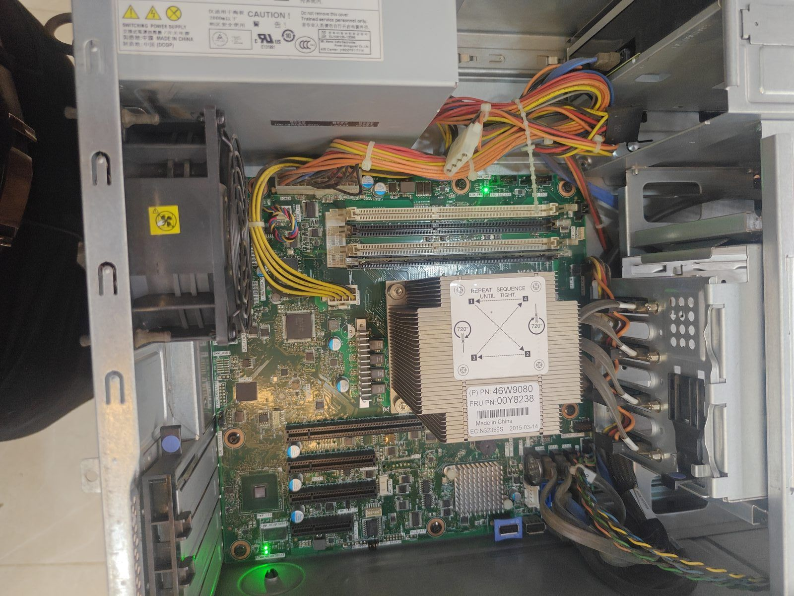

A refurbished server looks like incredible value: 16 cores and 32GB of RAM for less than a new desktop. For the right job it is. For the wrong job it is a noisy, power-hungry box that does not make your office any faster. Here is how to tell the difference.
Sound familiar?
- Is your company data spread across staff PCs and pen drives, with no central copy?
- Does the whole office wait when the "main computer" with the Tally data is switched off?
- Has someone offered you a "powerful server, very cheap", and you are not sure you need one?
Central storage and a proper server can make an office faster and safer, but only when the hardware fits the job.

What you're looking at
Start with the obvious difference: two processor sockets. The finned metal block in the middle is a heatsink covering one Xeon. To its right, the bare square grid of pins is a second, empty socket. A server can run two physical processors at once.
Next, eight memory slots in two banks. Servers are built to hold large amounts of RAM, specifically ECC RAM, which detects and corrects memory errors as they happen. Desktop RAM will not work in most of these boards, and server RAM will not work in a desktop.
Those grey cables run to a hot-swap drive backplane, where drives slide in from the front without opening the case or switching off. That matters only if the machine must never stop.
And the fans: servers move a lot of air, loudly, because they are designed for a cool server room where nobody sits.
Why the specs mislead
The key point: a Xeon from 2015 has many cores, but each core is slower than a core in a current i3. Most everyday office tasks — opening a file, loading a web page, running a report — use one core at a time, so a server used as a desktop feels slow.
Servers win at work that runs many tasks at once: shared files for many users, a multi-user database or ERP, several virtual machines, backups. Then there is electricity: a few hundred watts, running continuously, adds meaningfully to the monthly bill — and it needs ventilation and a UPS.
When a server makes sense for your office
- Central file storage for many users, with folder permissions and scheduled backups.
- A data server for Tally or an ERP used by several people at the same time.
- Virtual machines — running several systems (for example a domain controller, an accounts system and a test machine) on one box with Proxmox or Hyper-V.
- A proper place to keep it — a store room or rack with ventilation and a UPS, not under someone's desk.
When a NAS or the cloud is better
For a small office that mostly needs shared folders and backups, a small NAS (network storage box with two to four drives) is quieter, uses a fraction of the power and is easier to manage. For email and shared documents, a cloud service may be simpler still. We recommend whichever fits your office, not the most expensive option.
If you're buying a server anyway, check these
- Are both CPUs present, or one? An empty second socket is normal, but the price should reflect one processor. "Dual Xeon capable" describes the board, not the contents.
- Is the RAM ECC registered (RDIMM) or unbuffered? Boards are picky. Mismatched or wrongly filled banks cause start-up failures that look like a dead machine.
- Does the RAID controller have a working cache battery or flash module? Without it the controller runs in a slower, safer mode.
- Power supplies: many servers have two for redundancy. Confirm both work; a failed one is often why the machine was sold.
- Drive caddies: the trays that hold the drives are model-specific and often missing. Buying them separately adds up.
- Listen to it run before you pay, and decide where it will live.
UPS and backups are not optional
A server must sit on a UPS that can shut it down safely during a power cut; sudden power loss is one of the most common causes of corrupted data. And RAID is not a backup: it protects against a failed drive, not against deletion, ransomware or a damaged controller. Keep a separate backup copy and test that it restores.
The real lesson
Specs are answers to questions. "How many cores?" only matters once you know whether your work uses more than one at a time. For business IT, the right questions are: what work will it do, how many people depend on it, and what happens to the business if it stops? Plan the hardware around those answers and every rupee goes further.
Common questions
Does a small office need a server?
Not always. For an office that mainly needs shared folders and backups, a small NAS is quieter, uses far less power and is easier to manage. A server makes sense for many users, a multi-user ERP or Tally data, or several virtual machines.
Can RMG Tech Solutions set up a server for our office?
Yes. We supply new or refurbished servers, install them with RAID storage, backups and a UPS, connect them to your network and maintain them under AMC.